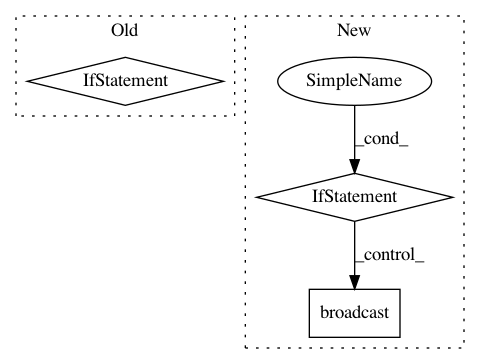

75e3f5e7892de6a0d86c0aa1bb9313b01d3ad485,python/src/nnabla/normalization_functions.py,,instance_normalization,#Any#Any#Any#Any#Any#Any#Any#,425
Before Change
axes = _get_axes_excluding(len(x.shape), [channel_axis, ] + batch_axis)
if output_stat:
out, mean, std = tensor_normalization(x, axes, eps, output_stat)
return out * gamma + beta, mean, std
return tensor_normalization(x, axes, eps, output_stat) * gamma + beta
def group_normalization(x, beta, gamma, num_groups, channel_axis=1, batch_axis=0, eps=1e-05, output_stat=False):
After Change
adapt_shape[channel_axis] = x.shape[channel_axis]
adapt_shape = tuple(adapt_shape)
if beta is not None and beta.shape != adapt_shape:
assert beta.shape[channel_axis] == adapt_shape[channel_axis],\
"channel size of beta: {} != channel size of x ({}).".format(beta.shape[channel_axis],
adapt_shape[channel_axis])
beta = broadcast(beta, shape=adapt_shape)
if gamma is not None and gamma.shape != adapt_shape:
assert gamma.shape[channel_axis] == adapt_shape[channel_axis], \
"channel size of gamma: {} != channel size of x ({}).".format(gamma.shape[channel_axis],
adapt_shape[channel_axis])
In pattern: SUPERPATTERN
Frequency: 3
Non-data size: 3
Instances
Project Name: sony/nnabla
Commit Name: 75e3f5e7892de6a0d86c0aa1bb9313b01d3ad485
Time: 2019-10-22
Author: Akio.Hayakawa@sony.com
File Name: python/src/nnabla/normalization_functions.py
Class Name:
Method Name: instance_normalization
Project Name: apache/incubator-mxnet
Commit Name: f86a8d10074f983b990ef420b96d664e911ee1bf
Time: 2019-12-16
Author: linhaibin.eric@gmail.com
File Name: python/mxnet/model.py
Class Name:
Method Name: _initialize_kvstore
Project Name: pymc-devs/pymc3
Commit Name: e3fd56b08ed5c4d7247a147c3fab7c0fe59e9a0e
Time: 2019-02-16
Author: luciano.paz.neuro@gmail.com
File Name: pymc3/distributions/mixture.py
Class Name: Mixture
Method Name: comp_dists